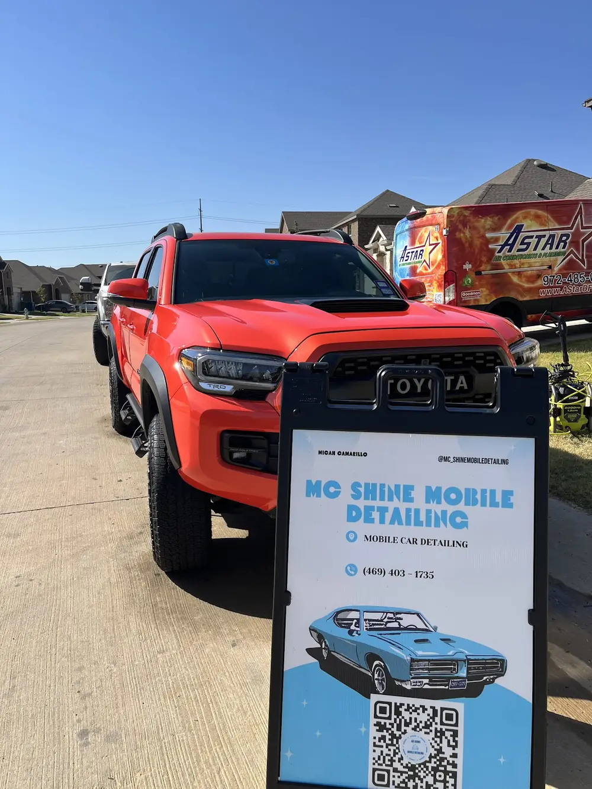

Interior Detailing
Deep-cleaned cabins, from caked-in mud and dog hair to a hand-finished interior that reviewers say "feels brand new."
Get a quoteInterior, exterior and full details for cars, trucks, Jeeps and SUVs, done by Micah wherever you park.
5.0· 37 Google reviewsDetailing that comes to your driveway. Every job starts with a free quote, because the price depends on your vehicle and what it needs.
Deep-cleaned cabins, from caked-in mud and dog hair to a hand-finished interior that reviewers say "feels brand new."
Get a quoteA hand wash and finish in your own driveway. Google reviewers say "the paint looks showroom-ready" and "I have never seen my car shine like this before."
Get a quoteOne visit, whole vehicle. A customer had a full detail and wash on his truck at home, and says it "looks as good as new."
Get a quoteMud-caked Jeeps, a Bronco back from a Colorado trip, a truck with years of dog hair. These are the jobs reviewers say Micah took on and turned around.
Get a quotePickups, Jeeps and SUVs fill the gallery and the Google reviews. Big vehicles are no problem for a mobile setup that comes to you.
Get a quoteReviewers booked on short notice, one was helped within 24 hours, and another had two cars detailed in a single visit.
Get a quoteTell us your vehicle and what bothers you most. Micah will suggest the right detail and give you a quote.
Ask for a quote
MC Shine on sitePhotos from the MC Shine Mobile Detailing Google listing.
37 Google reviews
Average rating as shown on Google, November 2026.
“This guy is definitely worth the price! He did an amazing job on our truck! We are absolutely pleased with his job! Thanks for coming out on such a short notice @MC_ShineMobileDetailing!! Only if I had before pics.. this truck was filthy!!!”
“I enjoyed my detail by MC Shine Mobile Detailing. The booking process was easy and quick. MC was very thorough and listened to what was I wanted to get out of the detail. Very professional, prompt, and communicative. The interior of my car looks amazing. Recommend!”
“Took my bronco mudding/camping for a week out in Colorado. Left my top off the bronco… it rained.. mud EVERYWHERE. I was not about to spend days cleaning out the mud. Called MICAH & he came out within 24 hours and took care of everything. He’s a DAWG!”
“Micah at MC Shine Mobile Detailing did an amazing job on my car! From the moment he arrived, he was professional, friendly, and clearly passionate about his work. He brought everything needed right to my driveway and treated my vehicle with the utmost care. The results were beyond my expectations—every inch of my car is spotless, the paint looks showroom-ready, and the interior feels brand new. Even the smallest details were handled perfectly. You can tell Micah takes pride in delivering high-quality results. If you’re looking for convenient, high-end detailing without the hassle, I highly recommend MC Shine Mobile Detailing. I’ll definitely be booking again!”
“Micah with MC Shine did a FABULOUS job. The job was a big task as my jeep travels regularly on a dirt road, it was caked on mud, inside and out! He completed in about 2 - 2.5 hrs, and she was so so shiny!! Not to mention his professional approach, respectful of my yard, and just a great person to work with! We will have him back out with his mobile detailing services!!!”
“When you Google for a mobile car detailer, this is the person you pray you’ll find!! Micah is a youngster doing it right. Courteous and trustworthy. Attention to detail & fast. He wowed me today and we’ll definitely be using him again!!”
“Micah came to my house and did a full detail and wash on my truck while I welded his exhaust. He did an amazing job it looks as good as new! I highly recommend MC Shine.”
“My car was FILTHY! I asked Micah for a quote and after an amazing price I was unsure about how it’d turn out but after just a couple hours he had my entire car looking absolutely spotless, I was more than surprised and he is a very nice young man. 100% recommend M.C. Shine!”
“Micah was simply awesome!! He was punctual and very respectful. He did a great job cleaning the interior of my SUV. Has a strong desire to succeed and makes sure the customer is highly satisfied with his product. Highly recommend this young man to anyone looking to get their vehicles detailed.”
“MCshine experience was amazing he came on short notice and got the job done extremely efficiently he had two cars of mine and made sure to do both of them done properly even with time crunches he even came over make it more convenient for me. Super mature and polite man would highly recommend”
“Micah transformed my car. It was dirty and disgusting and I hated driving it. When micah was done with it it looked brand new. I definitely recommend.”
“Would recommend over any drive thru car wash great services for a great price and an overall great experience”
Selection of verbatim Google reviews, rating as shown on Google, November 2026. Drag or swipe to browse.
MC Shine is a mobile detailer serving Collin and Denton County, Texas, according to the Instagram profile. There is no public shop address, so call or text to confirm Micah can reach you.
The Instagram bio lists Collin/Denton County, Texas. This is a mobile service with no public shop address, so call or text to confirm that Micah can reach your location.
Yes. That is how MC Shine works. Google reviewers describe detailing done in their driveway, at their home and in their yard, and one says Micah brought everything needed with him.
Google lists Sunday 8 AM to 7:30 PM and Monday to Saturday 9 AM to 7:30 PM. Hours can change, so call or text to confirm.
No price list is published, so every job starts with a free quote based on your vehicle and what it needs. Reviewers describe the pricing as "worth the price" and "an amazing price."
It depends on the vehicle and its condition. One reviewer's mud-caked Jeep took about 2 to 2.5 hours, and another says a very dirty car was spotless after a couple of hours.
Call or text +1 469-403-1735, send a direct message on Instagram, or use the quote form on this site. The form prepares a text message to Micah. Nothing is booked until he confirms the day and place with you.
Call or text for a free quote. Mobile service in Collin and Denton County. Open every day, Mon–Sat 9 AM – 7:30 PM, Sun 8 AM – 7:30 PM.